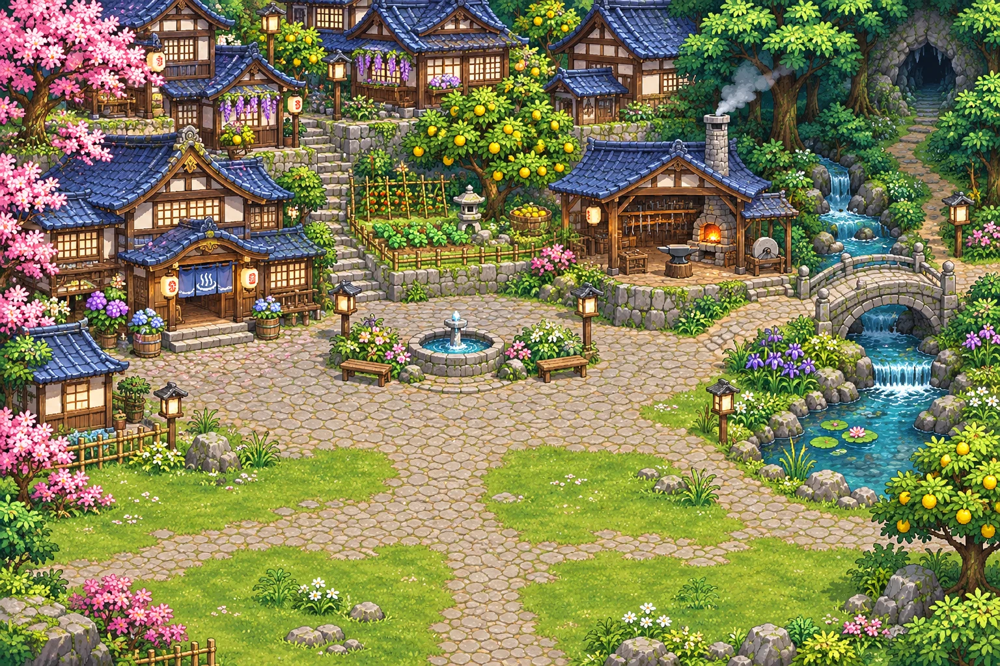

THE LIGHT WE LEAVE BEHIND
帰る場所のある世界
かつて英雄・柚胡椒をたたえて築かれた街は、長い年月の中で衰退していました。
街の復興と失踪した英雄の手がかりを求め、あなたと仲間の旅が始まります。
A WORLD THAT LIVES ON
目的を選んで、仲間と出発。
最大24時間、あなたの旅が続きます。
本人のログインを確認しています…
あなたのアカウントでログインしてください。
ログインへ読み込みできない場合は、直前の保存を確認できます。配信のEXP・コインは変更しません。
30分ごとに、探索・採集・交流・休息の記録が届きます。閉じていた時間も最大24時間まで計算します。
YOUR OWN PACE
疲れたら自動で宿屋へ。方針は次の活動から反映します。配信の職業は変更しません。
ADVENTURERS GUILD
仲間を決めて、ひとつの活動へ。閉じている間も最大24時間まで進みます。

ONE PLACE, EVERY ACTIVITY
以前に始めた活動をここで確認・回収できます。自分の探索や仕事が残っている間は、新しいオート冒険へ出発できません。
TRAVEL TOGETHER
本人＋NPC最大3人。次の探索から編成を反映します。ここでの資材は住まい用。共通EXP・コインは下の配信連携の探索・仕事で獲得します。
LIFE, AT YOUR OWN PACE
THE LIGHT WE LEAVE BEHIND
かつて英雄・柚胡椒をたたえて築かれた街は、長い年月の中で衰退していました。
街の復興と失踪した英雄の手がかりを求め、あなたと仲間の旅が始まります。
A LIGHT TO COME HOME TO
ここで集める資材は、あなたの住まい専用です。街みんなの資材や柚コインは使いません。
家具を選んで、置く場所を押してください。配置を保存するまで確定しません。
PREPARE FOR YOUR NEXT JOURNEY
配信と同じ柚コイン・職業を使用します。解放済みの転職は無料。購入は配信への同期後に確定します。
ONE WORLD, ONE ENTRANCE
今までの機能を、この画面の中で利用できます。家族の承認や公開設定は今までと同じです。
LITTLE MOMENTS, KEPT
YOUR STORY, ON PAPER
実際に保存した最近の記録から作ります。内容を確認して、必要なときだけ保存・共有できます。
画像を保存復元すると住まいなどは選んだ時点に戻ります。記録済みの出来事と配信のEXP・コインは戻しません。
お金稼ぎの報酬・街への貢献は、帰還後に配信へ同期します。配信側の起動を待つ場合があります。